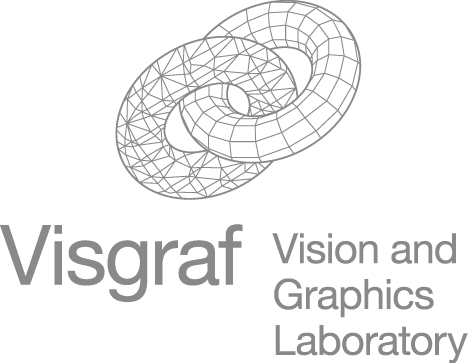
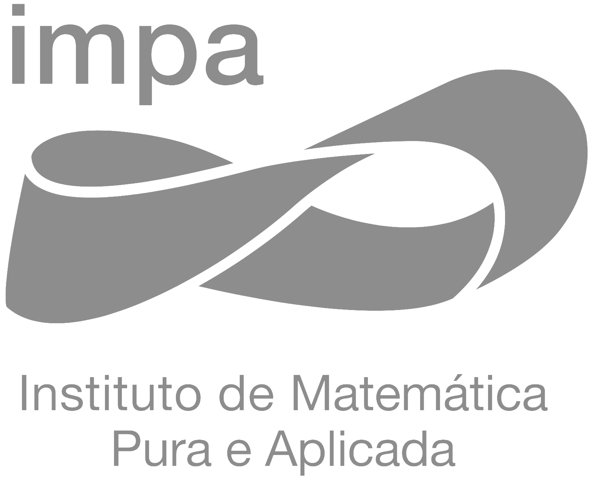

Temas de Computação Visual:
História, Modelagem e Visualização
Professores
Horário e local
2a, 3a, 5a de 10:00 às 12:00 na sala 224
6a de 10:00 às 12:00 na sala 224 — monitoria com
Rodrigo Loro Schuller
Programa
- Histórico da Computação Gráfica
- Marcos da evolução científica e tecnológica da área
- Realizações dos principais centros de pesquisa
- Contribuições dos pesquisadores mais importantes
- Modelagem Geométrica
- Objetos gráficos e métodos de modelagem
- Curvas e superfícies polinomiais
- Curvas e superfícies de subdivisão
- Processamento geométrico
- Visualização
- Imagem, Amostragem e Reconstrução
- Rasterização e Vector Graphics
- Operações e sistemas de coordenadas
- Algoritmos de visualização
- Simulação da iluminação
Referências
Slides
Tarefas
Organização

